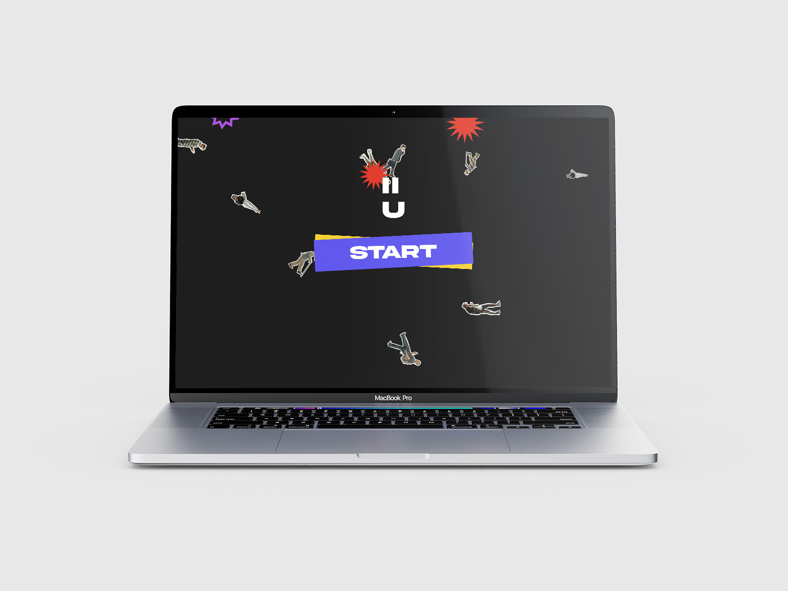
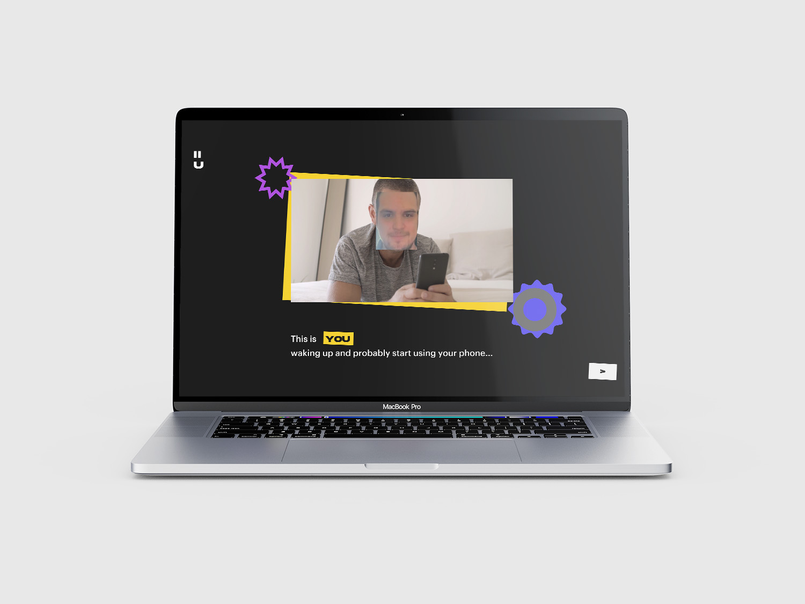

<!DOCTYPE html>
<html lang="en">
  <head>
    <meta charset="utf-8" />
    <meta name="viewport" content="width=device-width, initial-scale=1.0" />

    <title>Andrea Corsini - i's on u</title>
    <link rel="icon" type="image/x-icon" href="assets/favicon.png" />

    <link rel="stylesheet" href="style.css" />

    <script src="libraries/p5.min.js"></script>
  </head>
</html>
<body>
  <a id="titolone" href="index.html">andreacorsini.it</a>
  <a id="projects" href="javascript:window.open('','_self').close();">back</a>

  <div id="totale">
    <div id="immagini">
      <div style="overflow: scroll">
        
        
        
      </div>
    </div>
    <div id="testi">
      <div id="testo">
        <span style="font-weight: 500; font-size: 3vh"
          >I's on U - Eyes on you</span
        ><br /><br />
        I's on u is a web experience in which the user is asked to reflect on
        how he approaches the various electronic devices present in his daily
        life, especially during the moments in which he watches different
        contents on the internet.<br />
        It traces, through the device's camera, the user's facial movements and
        tries, through a machine learning algorithm, to understand their
        emotions, to present how we interface with a content.<br />
        On the technical side this is a website programmed in HTML and
        JavaScript, in particular the p5.js library is used for movement and the
        ml5’s Face-api for facial recognition.
        <br />
        <br />
        <a
          href="https://drawwithcode.github.io/2022-group-project-group08/"
          style="text-decoration: underline; color: white"
          >Here you can try the experience</a
        >
        <br /><br />
        <span style="font-size: 1.5vh">
          in collaboration with:<br />
          Simone Cerea<br />
          Giuseppe Defilippis<br />
          Stefano Gubiolo<br />
          Barbara Mazzina<br />
        </span>
      </div>
    </div>
  </div>
</body>
